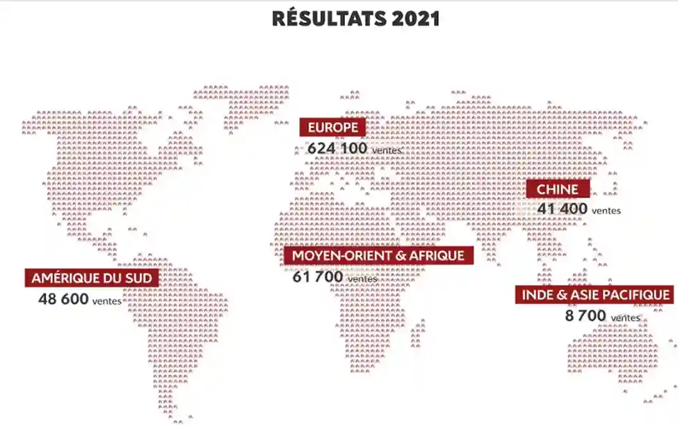

Diagnostique externe
Citroën est une entreprise réputée dans certains pays notamment en Europe, en Amérique du Sud ainsi qu'en Inde et comme toute entreprise elle possède des forces et des faiblesses. Pour pouvoir déterminer ces forces et faiblesses nous allons procéder à partie diagnostique externe nous traiterons.
Concurrence
Citroën fait face à une concurrence intense, notamment dans le segment des citadines et des SUV compacts. La Dacia Sandero est l'un de ses principaux rivaux, en particulier avec la nouvelle Citroën C3, qui se positionne comme une alternative plus abordable. Parmi les autres concurrents, on trouve également Renault avec sa gamme électrique, Peugeot (du même groupe Stellantis), Volkswagen et Fiat qui rivalisent sur des segments similaires, notamment avec des modèles électriques et thermiques, mais ce n’est pas tout, car il y a aussi les Opel Corsa, Hyundai i20 mais toutes ont un point commun, un tarif plus élevé que la C3 sauf pour la Sandero qui est moins chère que la C3. Toutefois, en entrée de gamme, la citadine roumaine demeure toujours la moins chère du marché avec un prix d’accès de 11 990 €.
Demande :
Après-ventes
Citroën a vendu environ 710 000 véhicules dans plus de 90 pays. En 2021 ils font une augmentation de 2,2%. L’âge moyen des acheteurs peut varier selon plusieurs critères ;
- En Europe se situe souvent entre 40 et 55 ans. En France c’est autour de 53 ans pour les voitures neuves.
- Pour les véhicules électriques et hybrides. Les acheteurs on autour de 40-45 ans, en raison de leur intérêt pour la technologie et l'écologie.
- Les jeunes adultes (18-35 ans) achètent plus souvent des véhicules d'occasion, car ils sont généralement moins chers et répondent mieux à leur budget.
Selon l'observatoire du site DriveK, le budget moyen des ménages français en 2018 pour l'acquisition d'un véhicule neuf a atteint les 22 900 €. Le taux de fidélité des clients de Citroën est d'environ 45 %. Citroën a donc un défi à relever pour améliorer la fidélité de ses clients, en misant potentiellement sur le service après-vente et l'amélioration de l'image de marque pour rivaliser avec ces concurrents.

Produit
Citroën crée sa marque de haut de gamme DS (Different Spirit), afin d’accompagner les voitures grand public. Citroën sort la DS3 qui est un grand succès, elle est personnalisable et les couleurs du toit peuvent être choisies en contraste avec la carrosserie de la voiture. Ce produit répond à la demande d’innovation et d’esthétique des consommateurs.
Prix
Citroën a une offre de prix diversifiée en fonction de la région, de la demande et de la concurrence. Citroën mise sur des prix variés afin de cibler différents segments de clientèle. La marque répond aux acheteurs de voitures de luxe et à ceux à la recherche de modèles plus accessibles. Citroën a ciblé principalement la classe moyenne su-périeure avec sa gamme de voitures. Citroën propose des voitures de catégorie supérieure, comme la DS 3, dont le prix est de 15 800 € avec 80 ch, et la sec-tion sportive, dont le prix est d'environ 29 990 € avec 202 ch. Ces voitures ont un prix un peu élevé par rapport aux autres voitures compactes.
Emplacement
Citroën se retrouve dans 50 pays, notamment en Chine qui est leur plus grand marché à l’étranger. Elle a également créé des joint-ventures dans plusieurs pays comme la Chine, la Turquie, la France, l'Italie, le Japon, la Russie, etc. La diversification des canaux de distribution comme la concession, l’exposition et salon dans différentes régions du monde, et enfin la vente en ligne qui facilite l’accès aux véhicules Citroën. Cela permet de répondre à la demande des con-sommateurs dans différentes régions.
Promotion
Citroën en créant un lien avec des événements sportifs et une image de marque dynamique, attire l’attention des consommateurs, par le biais du branding (en-semble d'actions marketing visant à constituer une image de marque, immédia-tement identifiable par la cible et véhiculant une perception positive).